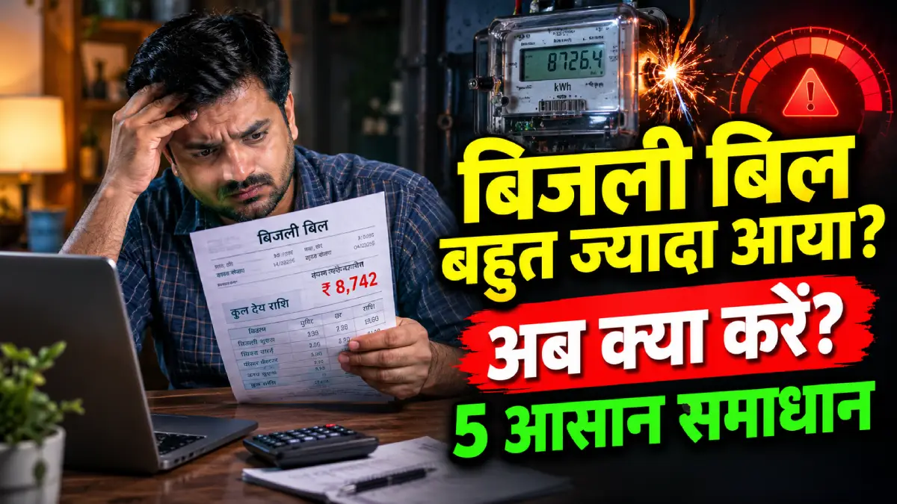

बिजली बिल अधिक आने पर क्या करें।
बिजली लगभग हर घर में आती है शायद ही ऐसे कोई घर होंगे जहां बिजली नहीं आती होगी। बिजली आज के समय में हमारे दैनिक जीवन का अहम हिस्सा बन चुकी है। दो दिन बिजली न आए तो हमारी हालत ख़राब हो और हम से बेहतर कौन जानता है। बिजली आने के साथ-साथ बहुत सारी समस्याएं भी आती है।

जिसकी सबसे बड़ी समस्या का कारण अधिक बिल आना है। इसी कारण आप इस लेख पर आएं। और यह आपने बहुत अच्छा किया इस लेख में हम अधिक बिल आने का कारण, अधिक बिल आए तो क्या करें, ऑनलाइन और ऑफलाइन शिकायत कैसे करें जैसे बिन्दुओं को सरल भाषा में बताया गया है। जिसको पढ़ने के बाद आपको किसी दूसरे लेख पर जाने की जरूरत नहीं पड़ेगी।
1. बिजली बिल अधिक आने के कारण:
- अधिक बिजली खर्च करने वाले उपकरणों का इस्तेमाल करने से।
- बिजली मीटर खराब होने से।
- घर की पुरानी वायरिंग से।
- बिजली ऑपरेटर द्वारा गलत या एकमुश्त रीडिंग जोड़ने से।
- उपकरणों को स्टैंडबाय (चालू हालत) में छोड़ने से।
विस्तार से समझें:
घर में फ्रिज, एसी (एयर कंडीशनर), कूलर, वाशिंग मशीन, हीटर और गीजर जैसे उपकरण सबसे ज्यादा बिजली खींचते हैं। इनका अधिक इस्तेमाल करने से यूनिट तेजी से बढ़ती है।
जब डिजिटल बिजली मीटर की अंदरूनी चिप खराब हो जाती है, तब मीटर बिना किसी लोड के भी अपने आप बराबर तेजी से भागता रहता है।
घर की दीवारों में पुरानी या कटी-फटी तारों के कारण बिजली दीवारों में ट्रांसफर (अर्थिंग) होती रहती है। इससे घर के सारे स्विच बंद होने के बाद भी मीटर लगातार बढ़ता रहता है।
यदि बिजली ऑपरेटर (मीटर रीडर) ने पिछले कुछ महीनों का बिल बिना मीटर देखे अनुमान से कम बनाया था, और इस महीने सही मीटर रीडिंग ले ली, तो पिछली बची हुई सारी यूनिट एक साथ जुड़कर बिजली बिल बहुत अधिक आ जाता है।
टीवी, सेट-टॉप बॉक्स, चार्जर या इन्वर्टर आदि को सिर्फ रिमोट से बंद करना और मेन स्विच (Main Switch) बंद न करना भी बिल बढ़ाता है। मेन स्विच चालू रहने से इनमें बराबर बिजली जाती रहती है और मीटर धीरे-धीरे रीडिंग जोड़ता रहता है।
2. बिजली बिल ज़्यादा आए तो सबसे पहले क्या करें।
3. बिजली बिल की शिकायत कहाँ और कैसे करें (ऑनलाइन, हेल्पलाइन, बिजली दफ्तर)।
आवेदन करने से पहले आपके पास ये दस्तावेज होने चाहिए।
- वर्तमान समय का बिजली बिल
- चार से पांच महीने के पुराने बिजली बिल तैयार रखें। यदि पुराने बिल नहीं तो पोर्टल के माध्यम से निकालें ।
- मीटर का फोटो खींचकर रख लें और एक 15 से 30 सेकंड की विडियो भी मोबाइल से बना लें।
- अपना आधार कार्ड और एक आवेदन पत्र लिखकर तैयार रखें।
ऑनलाइन शिकायत करने की प्रक्रिया।
ऑनलाइन शिकायत करने लिए इन चरणों को फॉलो करें:
यदि कोई और समस्या है जो इसमें नहीं है तो आप Other ऑप्शन चुनकर अपनी Request डाल सकते हैं।
हेल्पलाइन नंबर की मदद से शिकायत करें।
बिजली दफ्तर में शिकायत करने की प्रक्रिया।
नोट: महत्वपूर्ण बातें।
- ऑफलाइन प्रक्रिया में सबसे जल्दी समस्या का समाधान होता है।
- बाकी बात रही हेल्पलाइन और ऑनलाइन शिकायत में तो इन प्रक्रियाओं में बहुत कम समस्या का समाधान होता है।
- यदि आपको अपनी समस्या का समाधान जल्द से जल्द चाहिए तो ऑफलाइन प्रकिया बेस्ट है।
- ऑफलाइन आवेदन में आपको बहुत सारे दलाल मिल सकते हैं जो बोलेंगे की आप हमें इतने पैसे दे दीजिए हम आपका काम करवा देंगे। ऐसे लोगों पर कभी न भरोसा करें।
- पैसे केवल बिजली बिल के दिए जाते हैं। किसी चीज को सुधरवाने के लिए नहीं।
- अधिक जानकारी के लिए UPPCL की वेबसाइट पर जाएं।
4. बिजली बिल अधिक/गलत आने पर एप्लीकेशन कैसे लिखें।
सेवा में, श्रीमान उपखंड अधिकारी (SDO), विद्युत वितरण उपखंड, [अपने क्षेत्र या ब्लॉक का नाम] विषय: अधिक/गलत बिजली बिल में सुधार के संबंध में। महोदय, सविनय निवेदन है कि मैं [आपका नाम], [गाँव/मोहल्ले का पता] का निवासी हूँ। मेरे घर में घरेलू बिजली कनेक्शन संख्या [खाता संख्या] लगा हुआ है। [महीने का नाम] माह का बिजली बिल ₹[बिल की रकम] का मिला है, जिसमें [बिल में लिखी यूनिट] यूनिट दिखाई गई हैं। जबकि मेरे मीटर में अभी रीडिंग केवल [असली मीटर रीडिंग] kWh है। मीटर रीडर द्वारा गलत रीडिंग चढ़ाने से यह बिल गलत बन गया है। मैंने मीटर की फोटो और पुराने बिल की कॉपी इस पत्र के साथ लगाई है। अतः आपसे निवेदन है कि मीटर की असली रीडिंग के अनुसार बिल सुधारकर सही बिल जारी करने की कृपा करें। संलग्न: मीटर रीडिंग की फोटो इस महीने के गलत बिल की कॉपी पुराने बिल की कॉपी भवदीय, नाम: [आपका नाम] खाता संख्या: [खाता संख्या] मोबाइल नंबर: [मोबाइल नंबर] हस्ताक्षर: ________
5. बिजली बिल कम करने के उपाय।
- सभी जगह LED बल्बों का केवल इस्तेमाल करें।
- पुराने और ज्यादा बिल खर्च करने वाले उपकरणों को समय-समय पर रिपेयर करवाएं या उन्हें हटा दें।
- कोई भी बिजली उपकरण ज्यादा Star वाला ही खरीदें। जैसे- फ्रीज ⭐ ⭐ ⭐ ⭐ ⭐
- AC को 24 से 26 डिग्री पर चलाएं।
- फ्रीज का दरवाजा बार-बार ना खोलें।
- पानी गर्म होते ही गीजर तुरंत बंद करें।
- वाशिंग मशीन में एक साथ सारे कपड़े धोएं।
- दिन में लाइट जलाने के बजाय खिड़की और दरवाजों को खोलकर घर में प्राकृतिक रोशनी आने दे।
- घर से बाहर निकलते ही सारे पंखों और लाइटों को बंद करने की आदत डालें।
- जैसे- टीवी, सेटअपबॉक्स को देखने के बाद मैन स्विच से बंद करें।
अक्सर पूछे जाने वाले प्रश्न
अपने फोन में Paytm या Gpay खोलें।
Recharge & Bills में एक Electricity bill का आप्शन मिलेगा जिस पर क्लिक करना है।
अपने प्रदेश का बिजली विभाग चुनना है उदाहरण: Uttar Pradesh Power (UPPCL) ।
इसके बाद आपको अपना District चुनकर Consumer Number दर्ज करके Continue पर क्लिक करना है।
अब आपकी बिजली बिल खुलकर आपके सामने आ जायेगी।
ऑनलाइन शिकायत करने लिए इन चरणों को फॉलो करें:
- सबसे पहले UPPCL की आफिशियल वेबसाइट पर जाकर "पंजीकृत उपयोगकर्ता लॉगिन" बटन पर क्लिक करें।
- अपना 'District' चुनकर 10 अंकों का अकाउंट नंबर दर्ज करके पासवर्ड या ओटीपी की मदद से लॉगिन करें।
- 'Consumer' के 'service request' ऑप्शन को चुनकर 'Bill correction request' पर जाकर अपना निवेदन कर सकते हैं।
- आप इतनी प्रकार की समस्याओं से संबंधित आवेदन कर सकते हैं:
- High Bill Amount
- Wrong meter reading
- Wrong reading of old meter
- Meter not update in bill
- Meter ok, bill faulty
- Maximum demand (KW)
- Wrong arrear amount
- Other
यदि कोई और समस्या है जो इसमें नहीं है तो आप Other ऑप्शन चुनकर अपनी Request डाल सकते हैं।
- सबसे पहले UPPCL की आफिशियल वेबसाइट पर जाकर "पंजीकृत उपयोगकर्ता लॉगिन" बटन पर क्लिक करें।
- अपना 'District' चुनकर 10 अंकों का अकाउंट नंबर दर्ज करके पासवर्ड या ओटीपी की मदद से लॉगिन करें।
- आपके सामने बिल का Dashboard खुलकर आ जाएगा Pay Now पर क्लिक करें।
- यदि आप पूरी बिल जमा करना चाहते हैं तो Proceed पर क्लिक करके UPI,QR , Debit card की मदद से भर सकते हैं।
- यदि आप पूरी बिल एक साथ जमा नहीं करना चाहते हैं तो Part Payment चुनकर Enter Amount करें और Proceed पर क्लिक करके UPI,QR , Debit card की मदद से भर सकते हैं।
- सभी जगह LED बल्बों का केवल इस्तेमाल करें।
- पुराने और ज्यादा बिल खर्च करने वाले उपकरणों को समय-समय पर रिपेयर करवाएं या उन्हें हटा दें।
- कोई भी बिजली उपकरण ज्यादा Star वाला ही खरीदें। जैसे- फ्रीज ⭐ ⭐ ⭐ ⭐ ⭐
- AC को 24 से 26 डिग्री पर चलाएं।
- फ्रीज का दरवाजा बार-बार ना खोलें।
- पानी गर्म होते ही गीजर तुरंत बंद करें।
- वाशिंग मशीन में एक साथ सारे कपड़े धोएं।
- दिन में लाइट जलाने के बजाय खिड़की और दरवाजों को खोलकर घर में प्राकृतिक रोशनी आने दे।
- घर से बाहर निकलते ही सारे पंखों और लाइटों को बंद करने की आदत डालें।
- जैसे- टीवी, सेटअपबॉक्स को देखने के बाद मैन स्विच से बंद करें।
- अधिक बिजली खर्च करने वाले उपकरणों का इस्तेमाल करने से।
- बिजली मीटर खराब होने से।
- घर की पुरानी वायरिंग से।
- बिजली ऑपरेटर द्वारा गलत या एकमुश्त रीडिंग जोड़ने से।
- उपकरणों को स्टैंडबाय (चालू हालत) में छोड़ने से।